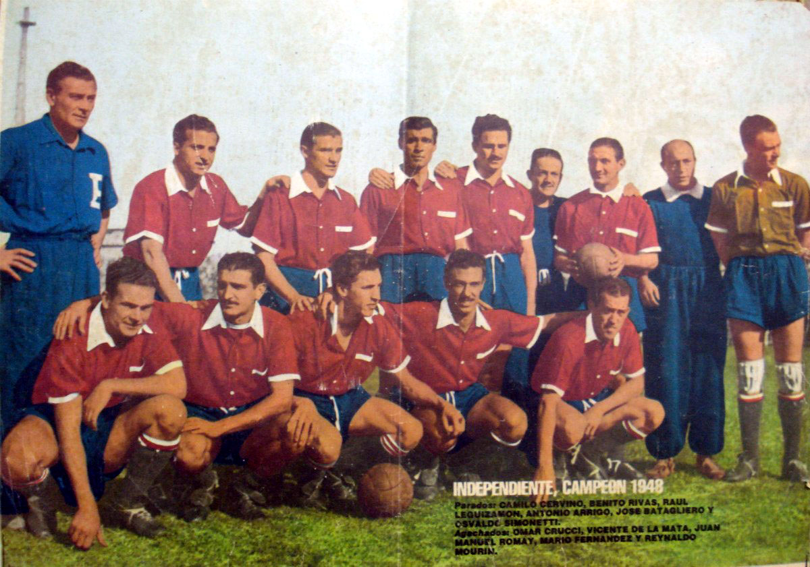

El Club Atlético Independiente es una entidad deportiva y educativa de la ciudad de Avellaneda, situada en el sur del Gran Buenos Aires, Argentina. Su fecha de fundación oficial es el 1 de enero de 1905, aunque el club como tal existe desde el 4 de agosto de 1904.91011 El fútbol masculino es su disciplina más destacada, cuyo primer equipo participa en la Primera División de Argentina, aunque también se practican otras disciplinas deportivas a nivel amateur y semiprofesional.
Ejerce su localía en el Estadio Libertadores de América-Ricardo Enrique Bochini, que cuenta con un aforo de 49 592 espectadores.12 El color que identifica al equipo es el rojo, color que utiliza en su uniforme desde 1908 y le da su principal apodo de «El Rojo».13
Es uno de los clubes con mayor renombre de Argentina, extendiendo su legado también en América del Sur y el mundo. En el ámbito local, «El Rojo» es considerado uno de los cinco grandes del fútbol argentino,14 protagonizando el Clásico de Avellaneda con Racing Club. Es poseedor de 16 ligas y 10 copas nacionales, la primera de ellas siendo la Copa Adolfo Bullrich de 1909. Ascendió por primera vez a la Primera División de Argentina en 1912, dejando de participar en ella solamente durante la temporada 2013-14.

En el ámbito internacional, el equipo ha conseguido el récord de siete títulos en la Copa Libertadores de América (1964, 1965, 1972, 1973, 1974, 1975 y 1984), con el hito de haber sido el único club en ganar cuatro finales consecutivas. Junto con la Libertadores, es el máximo ganador de cuatro competencias internacionales distintas: la Copa Interamericana con tres títulos (1973, 1974 y 1976), la Supercopa Sudamericana con dos (1994 y 1995, al igual que Cruzeiro) y la Copa Sudamericana también con dos (2010 y 2017, récord compartido con Boca Juniors, Athletico Paranaense e Independiente del Valle).15 También se consagró en la Recopa Sudamericana 1995 y en la Copa Suruga Bank 2018. Si se incluyen los campeonatos rioplatenses de fútbol, el palmarés total asciende a veinte títulos, con las ediciones 1938 y 1939 de la Copa Dr. Ricardo Aldao.16
Con base en los mencionados logros Independiente obtuvo su apodo de «Rey de Copas», tras obtener su 12.º título internacional (en referencia a la carta homónima de la baraja española).17 Sus mayores logros deportivos los obtuvo en los años 1973 y 1984 cuando se consagró campeón mundial en la Copa Intercontinental, derrotando a los campeones europeos: la Juventus de Italia y el Liverpool de Inglaterra respectivamente. Con su victoria ante Liverpool en Japón, Independiente ganó el primer enfrentamiento entre un equipo argentino y uno británico tras la Guerra de Malvinas, razón por la cual fue llamado el «Orgullo Nacional».18 También generó un impacto en el mundo del fútbol cuando en 1953 derrotó por 6‒0 como visitante al Real Madrid español y 8‒1 al Sporting portugués.19
En el año 2009 la Federación Internacional de Historia y Estadísticas de Fútbol (IFFHS) realizó un ranking internacional del siglo xx, ubicando a Independiente como el segundo mejor equipo sudamericano y mejor equipo argentino de dicho siglo.20